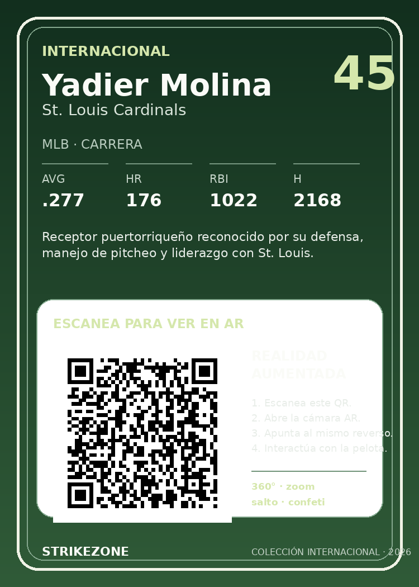

StrikeZone · Colección Internacional
Yadier Molina
Escanea el QR del reverso, abre la experiencia AR y después apunta la cámara al reverso de la tarjeta.

StrikeZone · Colección Internacional
Escanea el QR del reverso, abre la experiencia AR y después apunta la cámara al reverso de la tarjeta.
